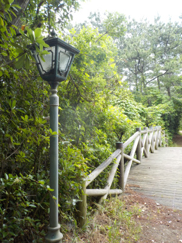
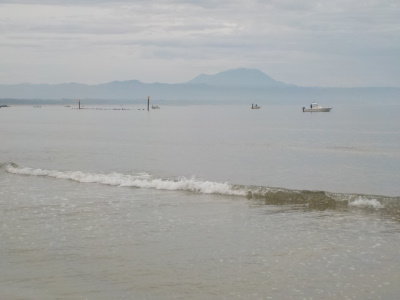
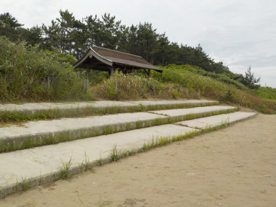
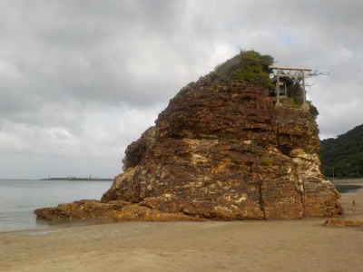
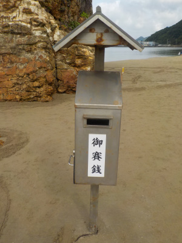
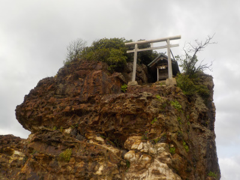
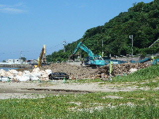
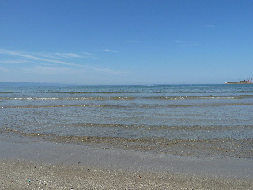
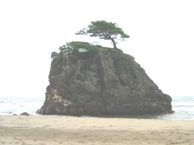

稲佐の浜は整備されて行きやすくなりましたね。
2023/06/11

稲佐の浜は駐車場が増えたり歩道が整備されたりして歩き易くなりましたね。
縁から縁まで歩いて往復するといい散歩コースになると思いました。

今日は船で何かの漁をされていました。いい風景です。

ここらへんは危険地帯でした。酒瓶の割れたのやタバコの吸い殻、風船の破片等がありました。
気をつけましょう。
島根県出雲市大社町杵築北
2023/06/11

稲佐の浜は駐車場が増えたり歩道が整備されたりして歩き易くなりましたね。
縁から縁まで歩いて往復するといい散歩コースになると思いました。

今日は船で何かの漁をされていました。いい風景です。

ここらへんは危険地帯でした。酒瓶の割れたのやタバコの吸い殻、風船の破片等がありました。
気をつけましょう。
2022/06/12

写真を撮ろうと思って稲佐の浜に来たんですが、曇ってて写真が綺麗に撮れませんでした。

砂浜にお賽銭箱がありました。きっと要望があって設置されたんでしょうね。
でもなんか景色と合ってない感じがします。

お賽銭を入れた人は何か願い事をするのかな？
「ここで〇〇の願い事をすると〇〇になるらしい」って話が出来るといいですね。
2011/07/16
稲佐の浜にうちあげられた流木なんかを、重機を使って片づけ中でした。

海岸の掃除ってこんなに大がかりなんですね。

おかげで海がとってもキレイでした。
まだ海開きになっていないみたいで、遊泳禁止の旗がありませんでした。
いい眺めでした。
2010/07/31
午前中に稲佐の浜に行ったんですが、天気も良くなかったですし、風が強く、波もちょっと高かったです。
なので泳いでる人は少なかったです。

稲佐の浜ってサーフィンする人いるんですね。何人かいらっしゃいました。
そんな人には丁度良かったかもしれません。